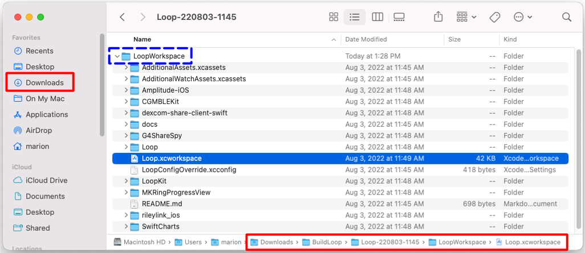
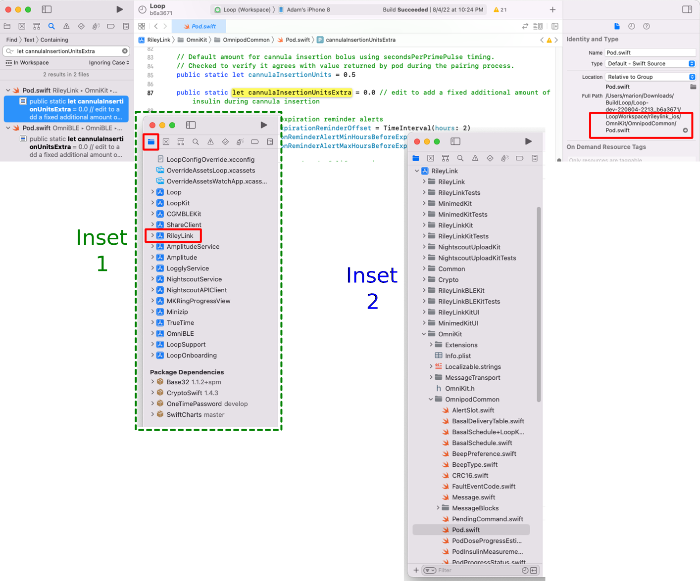

Code Customizations¶
Based on Loop users’ experience, there are some customizations that you may want to incorporate ahead of building your Loop app and Apple Watch app. These customizations must be done prior to building the Loop app onto your iPhone, they cannot be done from within the app itself. If you are an experienced builder - you know what to do.
Build then Customize¶
For new builders, please build the code before you make any changes. Start with Open Loop and familiarize yourself with the interface. Later, you can make the customization(s) you desire (using Xcode as your editor) on the same download as the original build and then build again to the phone. The second build will be much faster than the first build.
When applying a customization, the downloaded code should be fairly recent. If you are not sure, get a fresh download. If you know your downloaded code is the Current Release, you can skip the download and use the same folder as last time.
Find My Dowloaded Loop Code¶
Refer to the graphic below. The Downloads folder in Finder is highlighted on the upper left. The full path to Loop.xcworkspace is highlighted along the bottom.
- Open Finder
- Navigate to Downloads/BuildLoop and look for your download by name and date
- Open that folder, for example, Downloads/BuildLoop/Loop-220803-1145, and inside that folder open the LoopWorkspace folder
- Inside the Downloads/BuildLoop/Loop-220803-1145/LoopWorkspace folder, double-click on Loop.xcworkspace
- Xcode automatically opens to that particular download
- You can then make the customizations and build to your phone

Experienced Builders
Experienced builders will often build a fresh download to a simulator for their phone iOS (not their phone) to ensure download is good and is compatible with macOS, Xcode and phone iOS. Once the build is successful, they apply their customizations and build again to the simulator. Last step is to build the customized version to their real phone.
Be sure to read the Instructions for Finding the Lines.
Line numbers may change
Every effort will be made to update the line numbers as the code is updated, but there may be times where the screenshots and line numbers differ from the current version of Loop code.
-
You may notice some customizations list line numbers for different branches
-
If you cannot identify a line that looks exactly like the example - do not guess - go to your favorite social media group and ask for help
Loop 2.2.x vs Loop 3 (Loop-dev)
- Loop-dev is still being tested - but when it is released it will be Loop 3.
- To simplify the amount of changes required after the release, the labels indicate Loop 2.2.x or Loop 3, if needed.
- Users of Loop Master refer to the Loop 2.2.x examples.
- Users of Loop-dev refer to the Loop 3 examples.
- Note that some changes are in a different file for Loop-dev (part of the architecture upgrade for the app).
Instructions for Finding the Lines¶
For each customization, you will be given landmarks to find the correct location in the code. You can choose to search using the Key_Phrase or navigate to the file in the folder structure and look for (cmd-L #) the line number. Note that the folder is listed with respect to the LoopWorkspace directory.
For each change you make in Xcode - be sure to save the file - otherwise the modification does not get built into your app.
use the copy button at right, paste into search
- Folder: Loop/subfolder1/subfolder2/etc.
- File: filename.swift, line number(s)
There may be a figure illustrating the change.
Below the figure, the original, and in some cases, the modified code will be displayed as text.
- Most customizations show the original line of code that you will be changing
- Sometimes that line is long and you may need to use the scroll bar to see the entire line in LoopDocs
- In most cases, an example customization is shown to assist you in deciding how to edit the line to meet your needs
To search using the Key_Phrase (see graphic below for clarification):
- A copy button is available when you hover your mouse in the right-hand side of the block below the title
Key_Phrase; click on it to copy the phrase - In Xcode, tap the Find menu item and select
Find in Workspace - Paste the text into the Find search-box that opens on upper left of Xcode screen and hit enter
- You should see a message
1 result in 1 file(for most cases)- Some customizations will show more than one result, but that will be explained in the directions for that customization
- The file in which the line is located is reported showing the line in that file containing the
Key_Phrase - Click on the one you think is correct and it will display in the main middle window of Xcode with the Keyword highlighted on the line you selected
- The
Key_Phrasewas selected to limit the search to just the relevant line (if possible) - In some cases, the
Key_Phrasegets you close but not exactly on the line where you need to make the modifications - please read carefully
- The

Folders and Icons¶
The folders listed in the code customization steps below are the actual directory names as stored on your computer. However, a shortened name is used for some folders when being displayed as icons in Xcode. Some people prefer to search through the folder icons to find a file instead of using the Find in Workspace feature.
In the graphic below, the user searched for an item found for both Eros and DASH pods (in two different files). The top part of the graphic shows the result of the search with user clicking on one instance. On the right side of the top graphic (highlighted by red rectangle) is the name of the selected file on the computer with the full directory name.
- Inset 1: User clicked on the folder icon (highlighted by red square) to see the list of icons for folders included in the LoopWorkspace
- Inset 2: User opens folders under RileyLink icon to open OmniKit, then OmnipodCommon to find the Pod.swift file

These folder icon names are different from the directory names on the computer:
| Folder Icon Name | Directory Name | |
|---|---|---|
| ShareClient | dexcom-share-client-swift | |
| RileyLink | rileylink_ios | |
| Amplitude | Amplitude-iOS |
All other icons and directory names match.
Disable Authentication for Bolusing¶
Depending on your iPhone preferences and model, you may have Face ID or Touch ID enabled. Those security features will also be used to authenticate bolus delivery in Loop. You can choose to disable authentication (i.e., not require Face ID, Touch ID, or passcode for bolusing) through the following code customization.
Loop 3
For Loop 3 (under test as Loop-dev), this controls the authorization requirement to modify Therapy Settings as well as to confirm bolus delivery.
canEvaluatePolicy(.deviceOwnerAuthentication
- Loop 2.2.x
- Folder: Loop/View Controllers
- File: BolusViewController.swift, Line 529
- Loop 3
- Folder: LoopKit/LoopKitUI/Extensions/
- File: Environment+Authenticate.swift, Line 20
The screenshot below was taken with Loop v2.0 when the line number was 201; with Loop 2.2.x versions, that same code is found at line 529. Add the false && as shown in the screenshot below:

Loop 2.2.x¶
Code Before Modification
if context.canEvaluatePolicy(.deviceOwnerAuthentication, error: nil) {
Code After Modification
if false && context.canEvaluatePolicy(.deviceOwnerAuthentication, error: nil) {
Loop 3¶
Code Before Modification
if context.canEvaluatePolicy(.deviceOwnerAuthentication, error: &error) {
Code After Modification
if false && context.canEvaluatePolicy(.deviceOwnerAuthentication, error: &error) {
Default Carb Absorption Times¶

Loop’s default carb absorption times are based on the high, medium, and low glycemic index absorption curves presented in Think Like A Pancreas by Gary Scheiner. With Loop 2.2.x, the lollipop (fast) icon is set for 2 hours, taco (medium) icon for 3 hours, and pizza (slow) icon for 4 hours. This is modified for Loop 3 to 30 minutes, 3 hours and 5 hours respectively.
defaultCarbAbsorptionTimes: CarbStore.DefaultAbsorptionTimes
-
Loop 2.2.x
- Folder: Loop/LoopCore
- File: LoopSettings.swift
- Line: 16 (2.2.4 master), 41 (2.2.4 AB), 50 (2.2.5 and later)
-
Loop 3
- Folder: Loop/LoopCore
- File: LoopCoreConstants.swift
- Line: 16
For example, if you wanted to modify Loop 2.2.9 so that lollipop represents a 30 minute absorption and pizza a 5 hour absorption, the edit would be as follows:
Code Before Modification for Loop 2.2.x
public static let defaultCarbAbsorptionTimes: CarbStore.DefaultAbsorptionTimes = (fast: .hours(2), medium: .hours(3), slow: .hours(4))
Code After Modification or default for Loop 3
public static let defaultCarbAbsorptionTimes: CarbStore.DefaultAbsorptionTimes = (fast: .minutes(30), medium: .hours(3), slow: .hours(5))
Note that if you change from 2 hours to 30 minutes, you must also change the indication before the parentheses.
Adjust Percent Bolus for Automatic Bolus¶
If you are mostly happy with the Dosing Strategy of Automatic Bolus but wish it delivered more or less insulin during every Loop interval, then this customization is for you.
This customization changes the percent of the recommended bolus used for automatic delivery. The method for calculating that recommendation is not changed by this modification. The default value is 40% (0.4). It is recommended you take small changes of 0.1 at a time. Once you modify it once and try it out for a while, it’s easy to go back and change it again.
With Loop 2.2.x, the end of the line has a comment // %, whereas with Loop 3, there is an explanatory comment (line starting with //) before the line.
Change just the number and double check that the value is less than 1.
let bolusPartialApplicationFactor
-
Loop 2.2.x
- Folder: Loop/LoopCore
- File: LoopSettings.swift
- Line: 89 (2.2.5 and later)
-
Loop 3
- Folder: Loop/Loop/Models
- File: LoopConstants.swift
- Line: 44
Code Before Modification
public let bolusPartialApplicationFactor = 0.4
Code After Modification to 50% of recommended insulin
public let bolusPartialApplicationFactor = 0.5
Do not exceed 1.0
This number should never be bigger than 1 (you’d be getting more than Loop recommends). If you think you need more than 1, consider your settings and meal entries.
Modify Override Sensitivity¶
Some people want finer settings on the override sensitivity picker and may want to limit the overall range for overrides – especially for children.
1% Settings Available without Customization
With the advent of Loop 3, the Override Sensitivity values are not limited by the default picker values of 10%.
- Not available in Loop 2.2.x
- Not available in FreeAPS (based off Loop 2.2.x)
- Select 1% Sensitivity
Any override more than a factor of 2 from 100% can cause Loop predictions to be wrong – especially if a carb count is entered. (An override is NOT the same as a manual temp basal - it changes insulin sensitivity factor and carb ratio in addition to the basal rate needed for zero change in IOB for the duration of the override.)
This example customization changes the lower bound for sensitivity to 50% (factor of 2 smaller than 100%) and provides 5% steps.
let allScaleFactorPercentages
- Loop 2.2.x and Loop 3
- Folder: LoopKit/LoopKitUI/Views
- File: InsulinSensitivityScalingTableViewCell.swift, Line 19
Code Before Modification
private let allScaleFactorPercentages = Array(stride(from: 10, through: 200, by: 10))
Code After Modification to 50% to 200% by steps of 5%
private let allScaleFactorPercentages = Array(stride(from: 50, through: 200, by: 5))
Modify Maximum Carb Entry¶
Some people want to limit the maximum number of carbs that can be entered in one entry – especially for children or folks who eat lower carb. This helps prevent accidental typos, e.g., entry of 115 g instead of 15 g for a meal.
maxQuantity =
As shown in the graphic below, this phrase shows up in 2 places, only the first one should be modified.

- Loop 2.2.x and Loop 3
- Folder: Loop/Loop/View Controllers
- File: CarbEntryViewController.swift, Line 33 (Loop 2.2.x) or 36 (Loop 3)
Code Before Modification
var maxQuantity = HKQuantity(unit: .gram(), doubleValue: 250)
Code After Modification to limit carb entry to 99 g
var maxQuantity = HKQuantity(unit: .gram(), doubleValue: 99)
Pods: Add Extra Insulin on Insertion¶
The default value is 0.0 u of extra insulin. If you use this customization, start with a small number and work your way up. If you are coming from manual podding and routinely gave yourself an extra bolus with your PDM at pod change time, you may not need nearly as much with Loop - be conservative.
Note that Loop does not include the amount of insulin in the prime or insertion steps in your IOB. The pod reports every pulse that it delivers to Loop. If you look in the Pod Settings insulin delivered row, that is the total delivered by the pod minus the (prime plus insertion) amounts. The only way to know that you successfully made this change is to count the clicks. Normal insertion is 0.5 U (0.5 U / 0.05 U per click = 10 clicks). So if you add 0.35 U to the "extra" value, you should get 0.35 / 0.05 = 7 extra clicks. In other words, 17 total clicks after you press insert.
This code change is found in one location for Eros Pods (called Omnipod throughout the app) and DASH Pods (called Omnipod Dash throughout the app). I tend to change both files, but if you're only using one kind of pod, that is really not necessary.
let cannulaInsertionUnitsExtra
- Loop 2.2.x: Eros Pod (ones that require a RileyLink compatible device)
- Folder: rileylink_ios/OmniKit/Model
- File: Pod.swift, Line 72 (Loop 2.2.x)
- Eros or DASH Pod (Loop 3 only)
- Folder: rileylink_ios/OmniKit/OmnipodCommon (Eros)
- Folder: OmniBLE/OmniBLE/OmnipodCommon (DASH)
- File: Pod.swift, Line 87 (Eros); Line 82 (DASH)
When finding the file using the folder icons in Xcode, instead of using the Key_Phrase in Find in Workspace, the RileyLink icon represents the rileylink_ios folder name on the computer.
Code Before Modification
public static let cannulaInsertionUnitsExtra = 0.0 // edit to add a fixed additional amount of insulin during cannula insertion
Code After Modification to add 0.35 U
public static let cannulaInsertionUnitsExtra = 0.35 // edit to add a fixed additional amount of insulin during cannula insertion
Modify the Guardrails¶
The Therapy Setting Guardrails are for Loop 3 (Loop-dev) only.
If you build Loop-dev over a version of Loop 2.2.x or FreeAPS where the Correction Range is lower than the default value of 87 mg/dL (4.8 mmol/L), your app will crash when you try to onboard.
The solution (until this is fixed) is to customize and lower the minimum value to be at or below the value you have currently set. Rebuild the app with the modified settings and you should be able to continue the onboarding process.
Guardrail(absoluteBounds:
- Loop 3 only
- Folder: LoopKit/Extensions
- File: Guardrail+Settings.swift
- Line: 12 for suspendThreshold
- Line: 26 for correctionRange
Code Before Modification
static let suspendThreshold = Guardrail(absoluteBounds: 67...110, recommendedBounds: 74...80, unit: .milligramsPerDeciliter, startingSuggestion: 80)
and
static let correctionRange = Guardrail(absoluteBounds: 87...180, recommendedBounds: 100...115, unit: .milligramsPerDeciliter, startingSuggestion: 100)
Modify the 67 for suspendThreshold or 87 for correctionRange to the desired value. Loop automatically converts from mg/dL. So you must enter values reasonable for mg/dL (18 times higher than for mmol/L).
If fixing a crashed app during onboarding, you must lower the 87 to match or be less than what is in your old settings.
Adjust Future Carbs Time Interval¶
Loop 3 (Loop-dev) limits the future time change allowed to 1 hour.
cell.datePicker.maximumDate = date.addingTimeInterval
- Loop 3 only:
- Folder: Loop/Loop/View Controllers
- File:CarbEntryViewController.swift
- Line: 361
- Default shown below (for maximum and minimum):
Code Before Modification
cell.datePicker.maximumDate = date.addingTimeInterval(.hours(1))
cell.datePicker.minimumDate = date.addingTimeInterval(.hours(-12))
Change the maximumDate to the number of hours in the future you desire. Remember that Loop may increase insulin dosing for future carbs - make sure that they actually arrive.
The minimumDate is how far back in the past you can modify time. The default is 12 hours in the past.
Adjust the Watch Crown Sensitivity¶
The rate of change of the carb and bolus entry pickers when using the digital crown can be altered as can the rotation required to confirm a bolus on the watch. If you are running an older series watch - you may want to make these customizations. When I switched from Series 3 to Series 7 watch - it was amazing. I got a graph on the main watch screen I didn't even know existed and the bolus acceptance was a breeze!
There are a number of places where you need to make changes (2 for sensitivity and 2 for bolus confirmation for Loop 2.2.x), so walk though them one at a time. For the Watch Crown Sensitivity, the 1/24 value is the ratio of rotations of the crown to the amount of change in the value. Changing it to 1/12 would mean that half as many turns would be needed for the same amount of carb or bolus entry.
- The Loop 2.2.x customizations are throughly tested by many users.
- The Loop 3 customization is provided from code inspection and one test - use with care.
Loop 2.2.x Sensitivity¶
let rotationsPerIncrement
- Folder: Loop/WatchApp Extension/Controllers
- File: AddCarbsInterfaceController.swift, Line: 249
- Initial Value: 1/24; try 1/12 to increase change in picker value for a given motion

let rotationsPerValue
- Folder: Loop/WatchApp Extension/Controllers
- File: BolusInterfaceController.swift, Line: 191
- Initial Value: 1/24; try 1/12 to increase change in picker value for a given motion

Loop 2.2.x Bolus Confirmation¶
In order to reduce the amount the user has to spin the watch crown to confirm a bolus, there are 3 numbers on 2 lines that must be modified. You will be working in the same file you just used to modify the watch sensitivity to adjusting the bolus amount, BolusInterfaceController.swift.
For example to change rotation required to 70% of the default, change 1.0 to 0.7 in 3 places on those 2 lines. This Key_Phrase returns 3 lines, the second 2 of which are the ones in that file where the change is required:
abs(accumulatedRotation)
- Folder: Loop/WatchApp Extension/Controllers
- File: BolusInterfaceController.swift, Lines: 311 and 360
- Initial Value: 1.0; try 0.7 to decrease how much is needed to confirm bolus
Loop 3 Digital Crown Adjustments¶
These are new instructions and the user should take care - and please report back if you have problems.
First - try it with no customization. Then make small changes.
This key phrase will indicate three different files in the same folder as shown in the graphic below - you can adjust each in turn as you desire. When you click on the line, the quantity you change is a few lines below where you find the Key_Phrase, except for the CarbAndDateInput file.
.digitalCrownRotation
- Folder: Loop/WatchApp Extension/Views/Carb Entry & Bolus

Modify Bolus Confirmation Motion¶
- File: BolusConfirmationView.swift, line 59
- Initial Value for
scalingRotationByis 4 - Decrease to require less motion to confirm bolus (use whole numbers only), start with 3
Modify Bolus Picker Sensitivity¶
- File: BolusInput.swift, line 53
- Initial Value for
rotationsPerIncrementis 1/24 - A change to 1/12 increases the change in picker value for a given motion
Modify Carb and Time Picker Sensitivity¶
- File: CarbAndDateInput.swift, line 68
- Initial Value for
rotationsPerIncrementis 1/24 - A change to 1/12 increases the change in picker value for a given motion
Expiration Notification Customization¶
An expiration notification feature has been added to Loop. You get a notification when you open the Loop app to alert you that the expiration is approaching. (Not available with version v2.2.4 and earlier.)
- Read Loop App Expiration Notification to see the expiration reminder
- Read Loop App Expiration Date if you have an older version of Loop
If you prefer a different notification time and frequency, there are two lines you can modify:
- Loop 2.2.x and Loop 3
- Folder: Loop/Managers
- File: ProfileExpirationAlerter.swift
- Line 16: modify how long before expiration you get the FIRST notification
- Line 28: modify how frequently you will be notified
expirationAlertWindow: TimeInterval
minimumTimeBetweenAlerts: TimeInterval

Default code for line 16:
static let expirationAlertWindow: TimeInterval = .days(20)
Example modifications to First Notification:
- 30 days: change
.days(20)to.days(30) - 12 hours: change
.days(20)to.hours(12)
Default code for line 28:
let minimumTimeBetweenAlerts: TimeInterval = timeUntilExpiration > .hours(24) ? .days(2) : .hours(1)
Modify Frequency of Repeated Notifications (Three Values):
- This phrase:
> .hours(24) ? .days(2) : .hours(1) - Rewritten as:
> Time_A ? Frequency_A : Frequency_B, means:- Use Frequency_A if there is more time between now and the expiration date than Time_A
- Use Frequency_B if there is less time between now and the expiration date than Time_A
You can enter Time or Frequency as .days(value), .hours(value) or .minutes(value).
Free App Users:
An example change that a Free Loop App user (who has to build once a week) might choose is:
> .hours(4) ? .days(10) : .hours(2)
.hours(12) on line 16, they would get notified at 12 hours, 4 hours and 2 hours before expiration on the day of expiration and only when the app is opened. Since you'll be building once a week, you can play around with these values until you are happy.
Exponential Insulin Curve¶
The Exponential Insulin Curve Models (Rapid-Acting Adult, Rapid-Acting Child, and Fiasp) default to an insulin duration of 360 minutes...but the peak activity of the various curves differs, as follows:
- Rapid-acting adult curve peaks at 75 minutes
- Rapid-acting child curve peaks at 65 minutes
- Fiasp peaks curve peaks at 55 minutes
If you wish to customize these values, please make sure you know what you are doing. This is not a modification recommended for Loop novices. For Loop 3 users, the file is in a different submodule and includes more models.
MARK: - Model generation
- Loop 2.2.x
- Folder: Loop/LoopCore/Insulin
- File: ExponentialInsulinModelPreset.swift
- Lines:
- actionDuration (20 to 29)
- peakActivity (31 to 40)
- effectDelay (42 to 51)
- Loop 3 << NOTE more models
- Folder: LoopKit/LoopKit/Insulin/ << NOTE new location
- File: ExponentialInsulinModelPreset.swift
- Lines:
- actionDuration (19 to 32)
- peakActivity (34 to 47)
- effectDelay (49 to 62)

Loop Logo¶
If you want an app logo other than the default green circle for your Loop app, you can easily customize this. To make it easy to generate the correct sizes of icons, you can use a site like appicon.build or appicon.co and just drag and drop your source image. The source image needs to be 1024 pixels x 1024 pixels. The site will email you a zip file or automatically download a set of files. Highlight and copy the contents of the Appicon.appiconset that you are sent, including the Contents.json file
Use Finder to Navigate to the LoopWorkspace folder. These instructions assume you used the Build Select Script - if your files are in a different folder, make the appropriate adjustment.
- Use Finder to navigate to Downloads / BuildLoop and open the folder with the most recent date (e.g., Loop-Master-211006-0524)
- Double-click on the LoopWorkspace folder
- Double-click on the AdditionaAssets.xcassets folder
- Double-click on the CustomLoopIcon.appiconset folder
- Replace the contents of the Appicon.appiconset with your copied images and Contents.json file.
- Rebuild your app
You may see a yellow warning that there are “unassigned children†depending on the images the app icon generator tool produced. The unassigned children alert will not prevent your app from building, it’s simply because there are more sizes of images than Loop app uses. You can just leave the unassigned children alone (wow...how often do you get to say that phrase?).
And now you'll be the proud new owner of a custom Loop icon.
Additional Customizations¶
Additional customizations may be found on another website, especially for older versions of the app. If you did not find the customization you want here on LoopDocs, then try the Loop and Learn Customization Page. Check that page in case this list is not up to date.
- Add Lyumjev Insulin Model (this is only needed for Loop 2.2.x, included in Loop 3)
- Pods: Increase Log File History Hours (only needed for Loop 2.2.x)
- Medtronic: Disable mySentry (only needed for older versions of Loop 2.2.x)
- Pods: Change Default Expiration Reminder (only needed for Loop 2.2.x)
- Emoji Modifications
- Disable Suspend Beeps (only needed for Loop 2.2.x)
Note that the other site has an index that points back to LoopDocs if the customization is found on this page.
Additional Customizations for Loop dev¶
The customizations below only work with the Loop dev branch.
- You should be comfortable typing commands in a terminal
- You should be comfortable with manipulations (as directed) with Xcode
- You will need to open a terminal in the LoopWorkspace folder of the code that you previously downloaded
- The next section provides instructions on opening the terminal in the correct place
Open a Terminal in LoopWorkspace Folder¶
Refer to the graphic below. The Downloads folder in Finder is highlighted on the upper left. The full path to Loop.xcworkspace is highlighted along the bottom. Double clicking on that file opens Xcode; but to apply customizations, you need to type commands in the terminal.
- Open Finder
- Navigate to Downloads/BuildLoop and look for your download by name and date
- Open that folder, for example, Downloads/BuildLoop/Loop-220803-1145
- Find the LoopWorkspace folder icon (dashed-blue rectangle)
- Hold down the CTRL key and click (or right-click) LoopWorkspace
- A menu appears - select
New Terminal at Folder(near the bottom of the list)
This new terminal window is now in the LoopWorkspace folder needed to type commands to apply patches.
Custom Type One LoopPatches¶
Several items have been consolidated into a set of patches found at CustomTypeOne/LoopPatches. These patches only work with Loop dev branch.
Check the instructions for the minimum date for Loop-dev. The patches will not work if the date is too old. The instructions also list the commit and date for the version of dev that was last tested with the patches.
Please read the LoopPatches documentation, follow the installation directions carefully and then test any patch that you enable - every time you build. These patches don't have the nice guardrails found in Loop dev.
Add Libre App to Loop Phone¶
This method only works for Loop dev branch and only for some Libre sensors. The US versions for Libre 2 cannot be read with an iPhone.
There are several options for code that will read the raw Libre values and convert them into glucose readings. You must do your own research to decide which code to use. Be aware that you must perform careful calibrations to maintain accurate glucose estimates.
These are the Libre iOS app options.
- xDrip4iOS: Documentation
- Check to see if your sensor is compatible
- To use this code with Loop, you must "build it yourself" with the same developer ID as you use with Loop (directions are in the documentation)
- If you use the TestFlight installation method, you will not be able to use this with Loop (on your phone without needing an internet connection)
- GlucoseDirect: README file on github repository
- If you use the TestFlight installation method, you will not be able to use this with Loop
- LibreTransmitter for Loop: README file on github repository
- LibreTransmitter is incorporated into Loop directly, so there not a separate app to be installed
- Refer to Modify Loop to use Libre
Once you have chosen the desired app, you need to install it on your Loop phone using the same developer ID as was used for the Loop app and then you must modify the Loop dev code that you previously downloaded.
Modify Loop to use Libre¶
None of these methods have been tested by the LoopDocs team. This information is copied from zulipchat conversations (shown in links below).
For your selected app to read the Libre, you must also add a client to Loop dev to interface with the "reader" app. You only need to add the client for the app you've chosen for accessing your Libre sensor. However, you may find watching the video for GlucoseDirectClient and reading the step-by-step instructions for xdrip-client-swift or LibreTransmitter may together give you a better idea how to incorporate your preferred app with Loop dev.
Add a client that interfaces with xDrip4iOS:
- Add xdrip-client-swift to Loop dev
- Note - there are extra details visible when you click on the black arrow icons in this file
- zulipchat converstation
Add a client that interfaces with GlucoseDirect:
- Add GlucoseDirectClient
- zulipchat conversation
- The instructions are in the video on the GlucoseDirectClient repo page
Add LibreTransmitter to Loop as a plugin:
- LibreTransmitter for Loop: README file on github repository
- LibreTransmitter is incorporated into Loop directly, so there not a separate app to be installed
- zulipchat conversation
- The required GetGlucoseFromRaw.swift file is not included in the repository due to legal concerns, so you have to get it from elsewhere